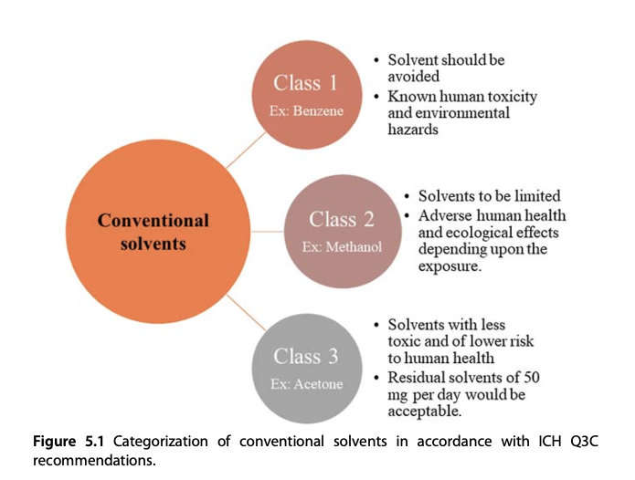
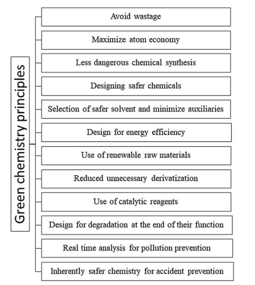

Chương 4: Dung môi mới ứng dụng trong chiết xuất
Tóm tắt
4.1 Giới thiệu
Dung môi rất cần thiết trong việc chiết xuất các hợp chất từ tự nhiên. Chiết xuất Soxhlet, chiết ngâm và lắc phân đoạn lỏng-lỏng là các ví dụ về sử dụng dung môi để thu được hoạt chất từ các mô thực vật. Sử dụng các phương pháp chiết xuất xanh như vi sóng, siêu âm giúp giảm lượng dung môi sử dụng, giảm thời gian chiết xuất và nâng cao hiệu quả chiết xuất. Các phương pháp này đều đỏi hỏi sử dụng dung môi để hòa tan hoạt chất, tách ra khỏi tế bào thực vật. Sự đa dạng của thành phần hóa học trong thảo dược cũng như phức tạp về tính chất hóa lý do tương tác giữa các thành phần dẫn đến khó khăn lựa chọn dung môi. Mong muốn một dung môi hiệu quả trong quá trình chiết xuất nhất định cần quan tâm tới các đặc tính như tính phân cực, khả năng truyền nhiệt, khả năng hòa tan, độc tính và các thông số hóa lý, bao gồm nhiệt độ sôi, độ nhớt và mật độ phân tử [3]. Một chất dạng lỏng, khí hoặc siêu tới hạn có thể đóng vai trò là dung môi trong các ứng dụng thực tế. Bên cạnh khả năng chiết xuất, sự kết hợp ngay quy trình bào chế có thể giảm giá thành sản xuất như một dung môi bào chế với dạng tiêm, dạng uống dung dịch hoặc nhũ tương. Với quy trình này, dung môi nước thường được lựa chọn khi chi phí thấp, dễ lọc, an toàn với người sử dụng và thân thiện với môi trường. Ngoài ra, các quy trình có kết tinh hoặc cần lọc thì nước thuận lợi hơn do phù hợp với các dạng thùng chứa và nguyên liệu thùng chứa. Ở nhiệt độ phòng, nước bay hơi thấp do nhiệt độ bay hơi tại 100^oC. Sử dụng nước trong quá trình chiết xuất giúp giá thành sản xuất thấp. Cũng có vài nhược điểm với dung môi này. Điểm sôi cao dẫn đến nếu sản xuất cần gia nhiệt để chiết hoặc loại bỏ dung môi trong quá trình sản xuất cần năng lượng lớn hơn. Một số nguồn cung nước sạch tại một số nơi trên thế giời còn hạn chế. Khả năng thấm nước trên một số nguyên liệu là không tốt do đó các nhà kha học tập trung vào nghiên cứu các loại dung môi mới có đặc tính giống nước nhưng khắc phục được các nhược điểm trên. [4]. Phần lớn các dung môi hữu cơ thông thường trong chiết xuất được phân loại vào nhóm các hợp chất hữu cơ dễ bay hơi (volatile organic compound-VOC). Theo quy tắc Q3C của Hội đồng Quốc tế về Hài hòa hóa (The International Council for Harmonization - ICH) phân loại các dung môi thông thường thành một trong ba nhóm (Loại 1, Loại 2 hoặc Loại 3) như được minh họa trong hình. Bên cạnh là dung môi chiết, các dung môi hữu cơ này có một số vai trò khác nhua khả năng tẩy rửa, làm lanh [5]. Nhiệt độ bay hơi thấp dẫn tới dễ cháy nổ trong quá trình sử dụng. Ngoài ra, do có đặc tính dược lý riêng dẫn tới người sử dụng có thể bị ảnh hưởng tới sức khỏe. Tác động môi trường của các VOC là cần xem xét tới khi lựa chọn để sản xuất. Nếu dung môi hữu cơ là chất lỏng siêu tới hạn là CO_2 thì đây là nguyên nhân gây ra hiện tượng biến đổi khí hậu.

Trong hơn thập kỷ qua, ngành công nghiệp dược phẩn cố gắng phát triển các dung môi thân thiện hơn với môi trường. Trọng tâm quá trình này các quy trình xanh trong hóa học. Các lĩnh vực nghiên cứu trong hóa học được đề cập trong bảng và hình. Đây là quy định về đăng ký, đánh giá, cấp phép và hạn chế hóa chất trong 12 nguyên tắc của hóa học xanh. Dung môi xanh được mong muốn là có độc tính tối thiểu, không bắt lửa, ổn định, không có khả năng gây đột biến và sẵn có. Chúng phải đảm bảo chi phí sản xuất thấp và dễ dàng vận chuyển.

::: STT Nguyên tắc Mô tả —– ———————————— ——————————————————————————————————————————————————————————————— 01 Ngăn ngừa Việc giảm chất thải quan trọng hơn là quản lý và làm sạch 02 Kinh tế Tất cả các thành phần được sử dụng trong quy trình phải được đưa vào sản phẩm cuối cùng khi sử dụng các phương pháp tổng hợp. 03 Hóa chất thân thiện với môi trường Sức khỏe con người và môi trường là yếu tố chính cân nhắc lựa chọn quy trình tổng hợp. 04 Thiết kế hóa chất an toàn Độc tính và hiệu quả của các sản phẩm hóa học cần được xem xét trong quá trình phát triển chúng. 05 An toàn dung môi và phụ gia Tốt nhất là tránh sử dụng các hóa chất phụ trợ (chẳng hạn như chất tách và dung môi) nếu khả thi, mặc dù việc sử dụng chúng không bao giờ được coi là có hại. 06 Thiết kế ảnh hưởng với môi trường Vì lợi ích của cả môi trường và nền kinh tế, các quy trình hóa học nên giảm yêu cầu năng lượng. Các quy trình hóa học nên được thực hiện ở nhiệt độ và áp suất phòng bất cứ khi nào có thể. 07 Sử dụng nguyên liệu tái tạo Bất cứ nơi nào có thể, tài nguyên thô và nguyên liệu nên được bổ sung thay vì cạn kiệt. 08 Giảm phái sinh Vì quá trình tạo dẫn xuất không cần thiết đòi hỏi phải sử dụng thêm hóa chất và có thể dẫn đến lãng phí, nên hạn chế hoặc tránh sử dụng bất cứ khi nào có thể. 09 Catalysis Thuốc thử cân bằng hóa học không đạt tiêu chuẩn so với thuốc thử xúc tác về hiệu suất. 10 Phân hủy Khi một sản phẩm hóa học đã phục vụ mục đích của nó, nó nên được thiết kế để phân hủy thành các sản phẩm phân hủy không nguy hiểm với tác động sinh thái tối thiểu. 11 Phân tích trong thời gian thực để hỗ trợ ngăn ngừa ô nhiễm Đối với hoạt động và đánh giá trong quá trình, thời gian thực trước khi hình thành các hợp chất độc hại, cần có những cải tiến bổ sung trong các phương pháp phân tích. 12 Hóa chất an toàn hơn để tránh tai nạn Các quy trình nguy hiểm nên sử dụng các chất và dạng chất hạn chế nguy cơ rò rỉ, nổ và cháy hóa chất.
: 12 nguyên tắc trong hóa học xanh. :::
4.2 Dung môi siêu tới hạn
Dung môi siêu tới hạn là các hợp chất (H_2O, CO_2 và NH_3) thể hiện các đặc tính của cả chất lỏng và chất khí ở áp suất và nhiệt độ trên điểm tới hạn của chúng. Dung môi siêu tới hạn có thể xem là hỗn hợp của cả chất khí và chất lỏng. Khi được nén, dung môi trở thành chất lỏng đồng nghĩa mật độ phân tử rơi vào khoảng (0,1-1 g/mL) và năng lượng dung môi tương tự như khí. Chỉ khi nhiệt độ và áp suất của chất vượt quá điểm tới hạn thì hiện tượng siêu tới hạn mới bắt đầu. Tuy nhiên, áp suất và nhiệt độ vượt cao hơn các giá trị tới hạn có thể không cần thiết để đạt được trạng thái lỏng siêu tới hạn. Một chất lỏng siêu tới hạn có thể tồn tại ở áp suất cao (ví dụ, trên 108 Pa) vì đường cong đóng băng có thể đi lên vùng chất lỏng siêu tới hạn. Điều kiện trên và gần với nhiệt độ và áp suất tới hạn thường gọi là dung môi siêu tới hạn nếu được dùng để chiết xuất. Tại trạng thái lỏng, các dung môi sẽ hòa tan tốt hơn các chất từ tự nhiên nếu so với trạng thái siêu tới hạn. Tuy nhiên, lợi thế tiềm năng của dung môi siêu tới hạn chính là khả năng điểu kiền quá trình hòa tan một hoạt chất. Độ hòa tan phụ thuộc vào mật độ phân tử trong dung môi chiết, và dĩ nhiên, với dung môi siêu tới hạn chúng ta có thể điều chỉnh mật độ phân tử bằng áp suất và nhiệt độ khi chúng là một hàm liên quan tới nhau. Nói cách khác, nếu bạn tăng nhiệt độ nhưng vẫn giữa áp suất sẽ giúp bạn làm giảm mật độ phân tử, và tăng độ linh hoạt của dung môi. Mật độ phân tử, áp suất, nhiệt độ là những yếu tố quan trọng nhất khi nghiên cứu chiết xuất siêu tới hạn. [6]. Nhiều phương trình trạng thái được xây dựng để mô tả mối liên hệ này, ví dụ phương trình trạng thái của Pitzer et al. Từ đó, quá trình này có thể mô phỏng trên máy tính . Hơn nữa, hệ số khuyếch tan của chất lỏng siêu tới hạn cao đồng nghĩa với độ nhớt thấp giúp hiệu quả chiết tăng cao so với quy trình diễn ra tại điểm dưới tới hạn. [7].
Bảng đề cập tới các dung môi siêu tới hạn dùng trong chiết xuất các hợp chất từ tự nhiên. CO_2 được sử dụng làm dung môi siêu tới hạn phổ biến nhất do không độc hại, không cháy, có khả thăng thu hài, rẻ tiền với áp suất và nhiệt độ thấp. CO_2 sẽ có đặc tính của chất khí và chất lỏng khi đạ trạng thái siêu tới hạn. Chất lỏng siêu tới hạn CO_2 có mật độ phân tử của chất lỏng, độ khuyếch tán và độ nhớt của chất khí. Đặc tính độc đáo này đã giúp nhiều nghiên cứu sử dụng làm dung môi chiết xuất các hợp chất từ tự nhiên. [8,9]. Khi xác định khả năng hòa tan của hoạt chất thường quan tâm tới mật độ phân tử của dung môi. CO_2 tại trạng thái siêu tới hạn đi qua hoàn toàn lớp màng tế bào thực vật để hòa tan các nhóm chất cần thiết. Nhiệt độ và áp suất được lựa chọn sao cho không ảnh hưởng tới hoạt chất cần quan tâm. Sau quá trình chiết xuất, quá trình giảm áp được thực hiện để đảm bảo CO_2 hóa khí và không còn trong sản phẩm. Kết quả, một số hợp chất không bền với nhiệt độ được lựa chọn để chiết xuất bằng dung môi siêu tới hạn CO_2.[10]. Quá trình loại bỏ lớp mô gỗ của nguyên liệu (Delignification) có thể là công đoạn trong sản xuất với phương pháp chiết siêu tới hạn. Lớp mô gỗ thường cấu tạo bởi các lignocellulose. CO_2 sẽ tạo môi trường acid yếu ở trong dung môi nước và giúp diễn ra quá trình thủy phân các carbohydrate. Giảm áp suất nhanh là một cách để kích thích quá trình phá vỡ cấu trúc của hemicellulose và cellulose giúp tăng cường diện tích bề mặt giữa cellulose và enzyem nếu lựa chọn phương pháp enzyem để hỗ trợ chiết xuất. Điều cần chú ý rằng phương pháp siêu tới hạn có hiệu suất hỗ trợ enzyme không bằng việc dùng Ammonia để phá bở sợi hoặc tiền sử lý với hơi nước. Tuy nhiên, cách tiếp cận này kinh tế hơn so với sử dụng hóa chất.[11].
4.3 Dung mỗi chứa Flo-Fluorous solvents
Fluorocacbon, còn được gọi là perfluorocacbon hoặc PFC, là hợp chất flo hữu cơ có công thức C_xF_y. Cấu trúc hóa học của chúng chỉ chứa cacbon và flo. Bản chất không phân cực của chúng và các tương tác liên phân tử yếu đã tạo ra fluorocacbon, đặc biệt là các perfluorinated alkanes, amine bậc 3, và ether (không phổ biến). Fluorocacbon là một dung môi khan do không có khả năng hòa tan trong nước. Fluorocacbon có thể xem là một dung môi vận chuyển trung gian của oxy trong hệ thống hai pha chứa nước do khả năng hòa tan oxy cực tốt của chúng. Đáng ngạc nhiên, hầu hết các dung môi phổ biến bao gồm bao gồm toluene, tetrahydrofuran, acetone và rượu có khả năng phân lớp với các ankan perfluorinated, amin bậc ba và ete, và những dung môi này có thể tạo thành hệ thống hai pha ở những điều kiện thích hợp [12]. Tương tự như nước, fluor được sử dụng với thế mạnh trong phản ứng hóa học để kiểm soát các chất xúc tác hoặc thuốc thử hòa tan tốt trong pha fluor. Pha fluor của hệ thống hai pha được môt tả gồm pha giàu fluorocacbon (chủ yếu là các ankan, ete và amin bậc ba được perfluor hóa): chất xúc tác hydroformyl hóa với một hai pha flo. Phản ứng hydroformyl hóa (hoặc oxo), thường diễn ra với sự có mặt của chất xúc tác coban hoặc rhodium đồng nhất, là một quy trình công nghiệp cơ bản để sản xuất các aldehyde đầu cuối sử dụng olefin (trong đó R là một nhóm alkyl), CO và H _2 . Các ankan perflo hóa với các nhóm chức, với điều kiện là có các tương tác thuận lợi tối thiểu giữa các nhóm đó, là các dung môi chứa fluor hiệu quả nhất. Do thực tế là các nhóm perfluoroaryl thể hiện các tương tác lưỡng cực, chúng ít tương thích với hệ thống hai pha fluoro (fluorous biphase system-FBS) hơn so với các nhóm perfluoralkyl. Các amin bậc ba và ete perfluoroalkyl cũng là những dung môi hấp dẫn do khả năng phát huỳnh quang. Mặc dù phân bố trong hệ FBD đáng kể có thể là đủ cho một số mục đích, nhưng chất xúc tác hoặc thuốc thử FBS được dùng để hòa tan tốt hơn trong pha huỳnh quang. Fluorocarbon hoặc fluoro hydrocarbon, có hoặc không có nhóm chức năng, có thể được sử dụng làm chất xúc tác hoặc thuốc thử tương thích với FBS. Độ hòa tan trong fluorocarbon có thể bị hạn chế bởi sự có mặt của các phần tử cấu trúc tương tác thuận lợi với nhau, điều này nên tránh. Các đặc tính cấu trúc này cũng có thể hấp dẫn các thành phần của pha đối lập, dẫn đến sự lọc pha fluor. Fluorohydrocacbon cải thiện cơ hội tương tác thuận lợi giữa các phần không được flo hóa của phân tử và nội dung của pha khác. Các gốc fluorocarbon nên được sử dụng để giảm các tương tác hấp dẫn trong tất cả các trường hợp này. Các chuỗi perfluoroalkyl tuyến tính hoặc phân nhánh với số lượng carbon lớn có thể chứa một số nguyên tử khác loại là các gốc fluorocarbon hiệu quả nhất (dây buộc fluorocarbon hoặc đuôi ngựa huỳnh quang). Để giảm đặc tính rút điện tử cao của tóc đuôi ngựa lưu huỳnh, hai hoặc ba nhóm (eCH2e) phải được chèn vào trước tóc đuôi ngựa lưu huỳnh. Đây là một yếu tố quan trọng nếu khả năng phản ứng của chất xúc tác hoặc thuốc thử gần đúng với khả năng phản ứng của các chất chưa biến đổi trong dung môi hydrocacbon một pha điển hình. Quá trình flo hóa, chức năng hóa với các hợp chất fluorocarbon (ví dụ: các nhóm fluorocarbon có thể được thêm vào thuốc thử hoặc chất xúc tác) hoặc tổng hợp hoàn toàn đều có thể được sử dụng để tạo ra các phối tử và thuốc thử tương thích với FBS (đối với chất xúc tác kim loại chuyển tiếp). Chiết xuất hai pha bằng cách sử dụng các phối tử hòa tan bằng flo để chiết xuất rhodium từ pha hydrocacbon là một kỹ thuật độc đáo để thu hồi kim loại nặng, một lĩnh vực bắt buộc của hóa học môi trường. Tính chất hóa học của phức hợp rhodium phosphine đã được ghi chép đầy đủ, và nó là một trong những kim loại chuyển tiếp đắt nhất được sử dụng trong nhiều quá trình xúc tác đồng nhất [12]. Do không có khả năng kết hợp với nước và pha hữu cơ ở nhiệt độ môi trường, dung môi chứa flo được gọi là “pha lỏng thứ ba”. Perfluorohexane, perfluorooctane, perfluoropolyether perfluorodecalin, methylcyclohexane và perfluorotributylamine chỉ là một vài trong số các dung môi có hàm lượng flo cao [13]. Việc sử dụng dung môi flo trong chiết xuất hóa chất hữu cơ và kim loại đã được nghiên cứu rộng rãi, nhưng việc chiết xuất hóa chất thực vật ít được chú ý hơn. Theo tài liệu, các dung môi chứa florua có thể được sử dụng như một quy trình chiết xuất và làm sạch độc đáo đối với nền thực phẩm như phô mai [14]. Tuy nhiên, có nhiều nhược điểm khi sử dụng các dung môi này, đáng chú ý là chi phí đắt đỏ, ứng dụng tối thiểu đối với các chất tan không phân cực mạnh và các vấn đề về môi trường [15].
4.4 Dung môi Ionic - Ionic liquids
Gần đây, dung môi xanh để tách phân đoạn các hợp chất từ tự nhiên đã xuất hiện bao gồm các chất lỏng ion (Ionnic liguids) và hệ dung môi dựa trên chất lỏng ion. Quá trình thương mại hóa các sản phẩm dựa trên công nghệ này thực tế vẫn còn hạn chế do kỹ thuật, kinh tế cũng như vấn đề môi trường. [16]. Muối IL tạo ra bởi anion vô cơ và cation hữu cơ tại nhiệt độ dưới 100 ^oC có độ ổn định cao, không cháy nhưng lại có khả năng hòa tan tốt các nhiều loại dung môi. [17]. Swatloski et al. [18] cho thấy dung dịch chứa muối IL dựa trên imidazolium có khả năng hòa tan một lượng lớn cellulose đã dẫn tới quan tâm sử dụng để tiền xử lý lignocellulose (phúc hợp gồm các polysacarit, polymer có gốc phenol và protein. Cấu trúc dạng vi sợi tạo ra độ bền cho vách tế bào thực vật). Các liên kết hydro của chúng bị phá vỡ dẫn tới IL có khả năng hòa tan các cellulose. Do đó, IL có thể phá vỡ cấu trúc của lignocellulose và thúc đẩy quá trình phân tách lignin, cellulose và thành phần khác đồng thời giảm việc sử dụng các hóa chất phá hủy mô thực vật.[19]. Phương pháp ứng dung môi Ionic đã tạo ra cellulose tinh khiết cho thấy hiệu quả IL. Rơm lúa mạch được tiền xử lý bàng 1-etyl-3-metyl-imidazolium acetat làm tăng chuyển hóa cellulose lên 10 lần và chuyển hóa cylan lên 10 lần. Với rơm lúa mì, lượng đường trong sản phẩm giảm 54.8% sau khi xử lý 12 giờ thủy phân bằng enzyme sử dụng thêm 1-etyl-3-metylimidazolium dietylphotphat. Chi phí sản xuất, khả năng thân thiện với môi trường có thể chấp nhận được, thêm nữa khả năng phân hủy sinh học làm cho các muối IL như 2-hydroxy-ethyl- amoni axetat áp dụng trong công nghiệp [20] [FurEt_2NH][H_2PO_4] và [p-AnisEt_2NH][H_2PO_4] là hai ví dụ về IL được sản xuất gần đây với khả năng phân hủy cellulose tốt. Các quá trình nghiên cứu gần đây tập trung vào nâng cao hiệu quả sử dụng trên quy mô lớn cũng như quá trình hòa tan chất hưu cơ.
Tổng hợp ionic liquid Nhiều IL có sẵn trên thị trường hoặc có thể được tạo ra dễ dàng bằng cách phản ứng với các thể cation và anion thích hợp. Chuyển hóa muối halogenua với, ví dụ, bạc, kim loại nhóm 1 hoặc muối amoni của anion mong muốn và các phản ứng trung hòa dựa trên acid là hai quy trình cơ bản được sử dụng để tổng hợp IL. Một phản ứng của halogenoalkane bên phải với amin tạo ra một số halogenua alkylammonium. Theo cách tương tự, pyridinium và imidazolium halogenua có thể được tạo ra. Điểm sôi thấp của halogenoalkan đòi hỏi ống kín hoặc quy trình phức tạp, như trong quá trình sản xuất 1-etyl-3-metylimidazolium clorua ([EMIM][Cl], trong đó [EMIM] là 1-etyl-3-metylimidazolium cation). Do đó, các muối có nhóm thế chuỗi dài hơn, chẳng hạn như 1-butyl-3-metylimidazolium clorua ([BMIM][Cl], trong đó [BMIM] là cation 1-butyl-3-metylimidazolium), đã trở nên phổ biến. Wilkes và Zaworotko đã tổng hợp 1-butyl-3-metylimidazolium tetrafluoroborat ([EMIM][BF4]) từ 1-etyl-3-metylimidazolium iodua ([EMIM][I]) và Ag[BF4] trong metanol vào năm 1992 [29]. Loại muối này có điểm nóng chảy thấp và có thể được sản xuất với giá rẻ bằng cách sử dụng axeton và amoni tetrafluoroborat ([NH4][BF4]) [30]. 1-Etyl-3-metylimidazolium hexafluorophotphat ([EMIM][PF6]) được tạo ra thông qua phản ứng của [EMIM][Cl] với acid fluorophotphoric. Nó ít được ưa chuộng hơn tetrafluoroborat vì điểm nóng chảy của nó cao hơn, điều này gây khó khăn cho các hoạt động ở nhiệt độ phòng ([BF4]) [31]. Các quá trình trao đổi chất đã tạo ra tris((trifluoromethyl)sulfonyl)methide ([(CF3SO2)3C]e), nonafluorobutanesulfonate ([NfO]e), bis((trifluoromethyl)sulfonyl) imide ([Tf2N]e), trifluoroacetate ([CF3CO2] e), heptafluorobutanoate, và thiocyanat ([SCN] ). Mặc dù các quy trình trao đổi chất đã nói ở trên hứa hẹn sẽ tạo ra các IL mới, nhưng một lượng nhỏ các ion halogenua từ IL có thể phản ứng trong quá trình sử dụng. Tetraalkylammonium tetraalkylboride thường được tạo ra bằng cách kết hợp tetraalkylammonium bromide và lithium tetraalkylboride trong quá trình tổng hợp metathesis. Trong quy trình trao đổi chất, các phản ứng tạo ra các amin bậc bốn thích hợp đã được sử dụng để tạo ra một số IL 1-alkyl-3-metylimidazolium trifluoromethanesulfonate ([EMIM][TfO]). Cách tốt nhất để tạo IL monoalkylamoni nitrat là trung hòa dung dịch nước amin bằng acid nitric [32].
4.5 Dung môi Eutectic Eutectic solvents
Khi hai hoặc nhiều hợp chất được kết hợp với nhau tạo thành hỗn hợp eutectic (eutectic mixture - EM) với đặc trưng các thành phần ức chế quá trình kết tinh của nhau và điểm nóng chảy thấp hơn bất cứ thành phần tinh khiết nào. Thuật ngữ eutectic có nguồn gốc tiếng Hy Lạp eutektos có nghĩa là tan chảy dễ dạng hoặc tan chảy nhanh chóng. Các EM có hoạt tính giống như thành phần, thân thiện với môi trường, kém bay hơi và không ổn định, đồng thời có đặc tính chống cháy với nước nên chúng thường được sử dụng trong xử lý nước. Urê (proline: urê), đường và acid hữu cơ (acid citric, glucose), acid hữu cơ và acid amin (acid malic, glutamate, acid lactic), cũng như choline clorua có thể được sử dụng để tạo EM [33]. Các đặc điểm quan trọng của EM bao gồm khả năng tăng cường hấp thụ hoạt chất vào máu bằng cách tăng khả năng hòa tan của hoạt chất và tăng cường tính thấm qua màng ruột. Ở trạng thái lỏng, EM được gọi là dung môi eutectic sâu (Deep Eutectic Solvent-DES). Các DES được tổng hợp bằng cách phản ứng giữa chất nhận liên kết hydro (a hydrogen bond acceptor-HBA) với chất cho liên kết hydro (a hydrogen bond donor - HBD). Ví dụ, muối halogenua amoni bậc bốn (HBA) và HBD (ví dụ, acid cacboxylic, rượu, amit, cacbohydrat, clorua kim loại) được kết nối với nhau bằng liên kết hydro. Khi HBA và HBD được trộn lẫn, hiện tượng thay đổi delocalization xảy ra, kết quả DES có các ion không đối xứng với năng lượng trong mạng lưới thấp và nhiệt độ nóng chảy thấp. [34]. DES mang lại nhiều ưu điểm giống như ES, chẳng hạn như ít nguy hiểm hơn, giá cả phải chăng, thân thiện với môi trường và không bắt lửa. Tùy thuộc vào HBA và HBD, DES có thể được phân loại thành bốn loại [35] được mô tả trong Bảng
Chuẩn bị dung môi Eutectic
DES là một chất lỏng ở nhiệt độ phòng được tạo ra bằng cách kết hợp hai hợp chất rắn để tạo dạng eutectic của chúng bao gồm muối amoni bậc bốn (ví dụ, choline clorua) và HBD. Nhiều lọai chất lỏng DES được phát triển trong đó có nhiều loại là dẫn suất từ hỗn hợp ba thành phần. Do liên kết hydro giữa các thành phần DESD làm giảm năng lượng trong mạng tinh thể so với các thành phần trong hệ thống eutectic, điểm nóng chảy cũng giảm. Mối tương quan giữa giảm điểm nóng chảy cũng như sự chênh lệch giữa đóng góp liên kết hydro và đóng góp cực vào thông số độ hòa tan của thành phần HBD đã được chỉ ra trong nghiên cứu của Li et al. [33] với dữ liệu từ 22 cặp DES dựa trên choline clorua. Các liên kết được xác định bằng cách sử dụng DESD mới được tổng hợp từ choline clorua và acid glycolic, tạo ra các DESD có đặc điểm giống như DES khi sử dụng tỷ lệ mol từ 1:1 đến 1:4. DESD đặc biệt này có khả năng tăng độ tan với một số hoạt chất có tính base nhẹ, ít tan trong nước tại nhiệt độ phòng. Khi so sánh với khả năng hòa tan trong nước tại nhiệt độ phòng, độ hòa tan của của itraconazole, lidocaine, posaconazole và piroxicam tăng lần lượt là 6700, 430, 28 và 6400 lần. Điều này bổ sung cho một DESD bậc ba hoàn toàn mới đã được tiết lộ là làm tăng khả năng hòa tan của itraconazole lên mức đáng chú ý là 5,36 mg/mL dựa trên tỷ lệ mol 1:1,6:0,4. Tính hữu ích có thể có của các DESD thích hợp đối với việc bào chế, đặc biệt là trong việc cải thiện khả năng hòa tan của thuốc đối với các công thức bôi ngoài da, có thể rất hấp dẫn do các thành phần của DESD như vậy có thể bao gồm các chất phân hủy sinh học đã được sử dụng trong các sản phẩm chế biến sẵn cho người [33]. Trong hầu hết các trường hợp, DES được tạo ra bằng cách nghiền nguyên liệu trong thiết bị nghiền. Chất lỏng trong suốt cũng có thể tạo ra bằng cách đặt hỗn hợp đã trộn vào máy khuấy từ và để khuấy trộn trong vài phút mà không cần gia nhiệt [36]. Tuy nhiên, để tạo ra một sản phẩm lỏng sau khi kết hợp các lượng bằng nhau của từng thành phần cần sự gia nhiệt nhiệt. Trộn mà không làm nóng trong thời gian dài sẽ không tạo ra DES khác biệt, ngay cả khi tỷ lệ của một thành phần không đổi và tỷ lệ của thành phần kia tăng lên. DES cũng có thể được tạo ra bằng cách hạ nhiệt độ tới mức đóng băng, sau đó được làm tan băng để cung cấp chất lỏng trong suốt để sử dụng trong DES. Sự bay hơi chân không có thể được sử dụng để tạo ra DES, sau đó bay hơi ở 323 K trong thiết bị bay hơi nhanh quay với các tổ hợp thành phần hòa tan trong nước. Dung môi eutetic sâu tự nhiên (NADES) có thể được tạo ra bằng cách trộn hai tá dược tự nhiên để tạo ra DES. Dung môi eutetic sâu trị liệu (THEDES) cũng có thể được tạo ra bằng cách kết hợp hoạt chất với tá dược hoặc giữa hai hoạt chất. Dung môi eutectic sâu polyme có thể được tạo ra tương tự bằng cách trộn EM với bất kỳ polyme nào. Điều này là do vấn đề chính của DES là độ nhớt cao của chúng ở nhiệt độ phòng, điều này hạn chế tính hữu dụng của chúng làm dung môi chiết. Để chiết xuất các hóa chất hoạt tính sinh học từ mô thực vật, thực phẩm và các chất tự nhiên khác, NADES đã được phát triển. Ngược lại, THEDES được sử dụng làm tá dược trong sản xuất dược phẩm. Chúng được sử dụng để tăng cường khả năng hòa tan, thúc đẩy quá trình thẩm thấu và nâng cao mức độ hấp thụ. Có một số NADES với các chất chuyển hóa chính như đường và được hình thành bởi choline clorua. Nhiều NADES chứa chất làm ngọt như fructose hoặc sucrose đã được phát hiện, cũng như những chất chứa acid hoặc bazơ như acid malic, sorbitol và choline clorua. Đây đều là NADES dựa trên đường [37]. Quá trình sinh tổng hợp NADES có thể được tạo điều kiện thuận lợi bởi các thành phần này, những thành phần thường có sẵn trong thực vật. Dựa trên phổ NMR giúp xác định các hỗn hợp này tạo liên kết hydro giữa các thành phần của chúng, một đặc điểm của NADES. DNA, protein và polysacide đều có thể bị NADES phân giải. Điều này có nghĩa là NADES kích thích quá trình sinh tổng hợp các sản phẩm tự nhiên không tan trong nước và chúng hòa tan cả chất nền và enzyme [36].
4.6 Tổng kết
Các quy trình chiết xuất dựa trên dung môi hưu cơ thân nước hoặc dung môi truyền thống thường được sử dụng để tách các hợp chất từ tự nhiên. Trong số đó, nước là dung môi được sử dụng phổ biến nhất. Tuy nhiên, việc sử dụng nước làm dung môi chiết xuất bị hạn chế khi các hợp chất tiềm năng không hòa tan đủ trong dung dịch nước. Mặt khác, các dung môi neoteric được tạo ra và sử dụng để chiết xuất các thành phần hoạt tính sinh học từ toàn bộ thực vật hoặc mô thực vật hoặc để sản xuất các sản phẩm dược phẩm chứa hoạt chất do sự bay hơi của VOC thông thường ở nhiệt độ môi trường. DES và SCF mang lại tiềm năng quan trọng nhất để chiết xuất các hợp chất từ tự nhiên hoặc xây dựng công thức trong số bốn dung môi mới được đề cập ở đây (SCF, IL, FS và DES). Trong dược phẩm, DES có những tiềm năng ứng dựng trong sản xuất quy mô công nghiệp do khả năng bào chế các vi nang dựa trên polyme ưa nước và nhũ tương không dầu. Một điều cần lưu tâm với các dung mới này chính là tác động với môi trường và sức khỏe con người chưa thực sự được hiểu rõ. Do đó, bên cạnh dung môi truyền thống các công ty được cũng hạn chế sử dụng các dung môi này trong phát triển sản xuất. Một số kỹ thuật chiết không dung môi có thể tiềm năng để ứng dụng trong công nghiệp.